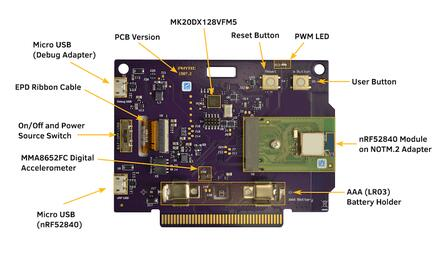
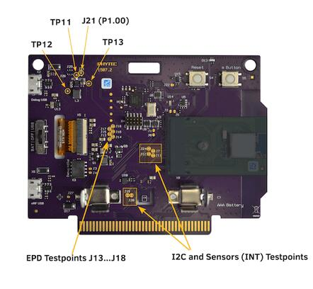
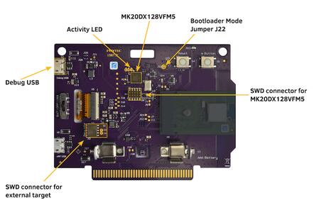
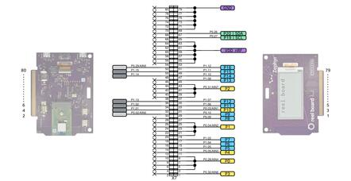
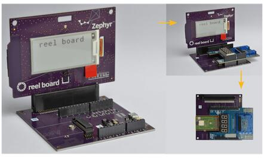
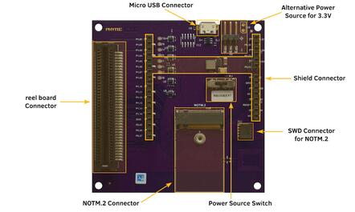

reel board
reel board
Overview
reel board [3] [1] is a evaluation board based on the Nordic Semiconductor nRF52840 SoC. The board was developed by PHYTEC Messtechnik GmbH in cooperation with Zephyr Project for the Hackathon - “Get Connected”. The board has a built-in debug adapter based on the DAPLink interface firmware and NXP MK20DX128VFM5 SoC.
It is equipped with the Electrophoretic (electronic ink) Display (EPD), environmental (temperature, humidity, light, accelerometer) sensors, and Bluetooth connectivity making it easy to experiment and evaluate the Zephyr OS in these kinds of use cases:
battery powered sensor node
low-power, low-cost human-machine interface (HMI) for remote control and environmental sensor monitoring
temperature and humidity monitor on your table
product, name or price tag
interactive badge for meetings and conferences
The board provides support for the Nordic Semiconductor nRF52840 ARM® Cortex®-M4F SoC with an integrated 2.4 GHz transceiver supporting Bluetooth® Low Energy and IEEE® 802.15.4.
The schematic can be found on the reel board website [3] [1].
Hardware
On the front of the board are RGB-LED, ADPS9960 and HDC1010 sensors, and Electrophoretic Display. The RGB-LED is controlled by the nRF52840 via GPIO pins. Display is controlled by the nRF52840 via SPI and 3 GPIOs.
On the back side of the board are all other components such as nRF52840, a circuit for the Debug Adapter, On/Off and power source switch, battery holder, buttons and the MMA8652FC (accelerometer) sensor.
ADPS9960 is a Digital Proximity, Ambient Light, RGB and Gesture sensor. HDC1010 is a digital humidity and temperature sensor. MMA8652FC is a 12-bit Digital Accelerometer. All sensors are connected to the I2C bus and one GPIO pin each, which can be used as an interrupt source.

reel board front (Credit: PHYTEC)

reel board back (Credit: PHYTEC)
Since PCB version 1507.2, the nRF52840 SoC is not soldered directly to the board but integrated as a module on a NOTM.2 adapter. The wiring is identical for versions 1507.1 and 1507.2.
Display
GDEH0213B1 is the display with which the board was introduced in 2018. Unfortunately, this display has been discontinued. Currently the board is delivered with the display GDEH0213B72. It is expected that the display will be replaced over time due the short product lifecycle of this type of displays. The following table lists the displays used on the reel board. The label on the ribbon cable can help to distinguish the displays. According to the display type, the correct designation must be used for building an application.
Display |
Ribbon Cable Label |
Controller / Driver |
Board Designation |
|---|---|---|---|
Good Display GDEH0213B1 |
HINK-E0213 |
SSD1673 / ssd16xx |
reel_board |
Good Display GDEH0213B72 |
HINK-E0213A22 |
SSD1675A / ssd16xx |
reel_board@2 |
Power supply
The board is optimized for low power applications and supports two power source configurations, battery and micro USB connector.
The On/Off switch can choose which power source is used.
reel board uses a TPS610981 boost converter to generate supply voltage for nRF52840 and peripherals (sensors and EPD). The boost converter has two modes:
Active mode - supply voltages for nRF52840 and peripherals are on
Low Power mode - only supply voltage for nRF52840 is on
The mode is controlled by MODE pin (P1.00).
Note
Actually there is no possibility to reduce energy consumption by the Low Power mode. Both voltages are always on, see: boards/phytec/reel_board/board.c
Supported Features
The reel_board board supports the hardware features listed below.
- on-chip / on-board
- Feature integrated in the SoC / present on the board.
- 2 / 2
-
Number of instances that are enabled / disabled.
Click on the label to see the first instance of this feature in the board/SoC DTS files. -
vnd,foo -
Compatible string for the Devicetree binding matching the feature.
Click on the link to view the binding documentation.
Connections and IOs
Port P0
Name |
Function |
Usage |
|---|---|---|
P0.00 |
XL1 |
32.768 kHz oscillator |
P0.01 |
XL2 |
32.768 kHz oscillator |
P0.02 |
expansion connector pin 30 |
None |
P0.03 |
expansion connector pin 31 |
None |
P0.04 |
expansion connector pin 19 |
None |
P0.05 |
expansion connector pin 11 |
None |
P0.06 |
UART0_TX |
UART Console over USB |
P0.07 |
Button |
user button (S5) |
P0.08 |
UART0_RX |
UART Console over USB |
P0.09 |
expansion connector pin 27 |
None |
P0.10 |
expansion connector pin 29 |
None |
P0.11 |
RGB LED (red) |
GPIO |
P0.12 |
RGB LED (green) |
GPIO |
P0.13 |
PWM LED | Buzzer |
GPIO |
P0.14 |
EPD Busy output |
GPIO |
P0.15 |
EPD Reset input |
GPIO |
P0.16 |
EPD DC input |
GPIO |
P0.17 |
EPD SPI3_CS |
SPI |
P0.18 |
CPU Reset |
Reset (S4) |
P0.19 |
EPD SPI3_CLK |
SPI |
P0.20 |
EPD SPI3_MOSI |
SPI |
P0.21 |
SPI3_MISO |
SPI (not connected) |
P0.22 |
HDC1010 DRDYn |
GPIO |
P0.23 |
APDS9960 INT |
GPIO |
P0.24 |
MMA8652FC INT1 |
GPIO |
P0.25 |
MMA8652FC INT2 |
GPIO |
P0.26 |
I2C_0 |
I2C |
P0.27 |
I2C_0 |
I2C |
P0.28 |
expansion connector pin 3 |
None |
P0.29 |
expansion connector pin 52 |
None |
P0.30 |
expansion connector pin 1 |
None |
P0.31 |
expansion connector pin 37 |
None |
Port P1
Name |
Function |
Usage |
|---|---|---|
P1.00 |
peripheral power on |
GPIO |
P1.01 |
expansion connector pin 32 |
None |
P1.02 |
expansion connector pin 34 |
None |
P1.03 |
expansion connector pin 17 |
None |
P1.04 |
expansion connector pin 15 |
None |
P1.05 |
expansion connector pin 13 |
None |
P1.06 |
expansion connector pin 33 |
None |
P1.07 |
expansion connector pin 35 |
None |
P1.08 |
expansion connector pin 45 |
None |
P1.09 |
RGB LED (blue) |
GPIO |
P1.10 |
expansion connector pin 47 |
None |
P1.11 |
expansion connector pin 49 |
None |
P1.12 |
expansion connector pin 51 |
None |
P1.13 |
expansion connector pin 36 |
None |
P1.14 |
expansion connector pin 48 |
None |
P1.15 |
expansion connector pin 50 |
None |
Solder Jumper and Testpoints
There are several labeled solder jumpers on the board. These can be used to connect a logic analyzer to check the behavior of a driver or to measure the voltage of a signal.

reel board testpoints (Credit: PHYTEC)
I2C bus and sensors testpoints
Name |
Type |
Usage |
|---|---|---|
J19 |
closed solder jumper |
testpoint I2C SDA |
J20 |
closed solder jumper |
testpoint I2C SCL |
J7 |
closed solder jumper |
testpoint INT1 MMA8652FC |
J24 |
closed solder jumper |
testpoint INT2 MMA8652FC |
J11 |
closed solder jumper |
testpoint INT APDS9960 |
J12 |
closed solder jumper |
testpoint DRDYn HDC1010 |
EPD testpoints
Name |
Type |
Usage |
|---|---|---|
J13 |
closed solder jumper |
testpoint EPD Busy |
J14 |
closed solder jumper |
testpoint EPD Reset |
J15 |
closed solder jumper |
testpoint EPD DC |
J16 |
closed solder jumper |
testpoint EPD SPI_CS |
J17 |
closed solder jumper |
testpoint EPD SPI_CLK |
J18 |
closed solder jumper |
testpoint EPD SPI_MOSI |
Power supply testpoint
Name |
Type |
Usage |
|---|---|---|
J21 |
closed solder jumper |
testpoint peripheral voltage on/off |
TP11 |
testpoint |
testpoint peripheral voltage |
TP12 |
testpoint |
testpoint nRF52840 supply voltage VDD_nRF |
TP13 |
testpoint |
testpoint boost converter input voltage |
Built-in Debug Adapter
The debug adapter is based on the DAPLink interface firmware and NXP MK20DX128VFM5 SoC. The adapter is powered via a micro USB connector and is always on when the board is connected to the USB host. reel board can be flashed and debugged, powered either from battery or USB. If the Adapter is powered via USB, the Adapter circuit heats the board slightly and the temperature sensor can output values up to 1.5 degrees higher.

reel board Debug Adapter overview (Credit: PHYTEC)
Debug Adapter Firmware
DAPLink firmware for the adapter can be found at DAPLink reel board Firmware [4] [2]. To update the firmware (if necessary), the adapter must be started in bootloader mode. For this, the board should be disconnected from the USB host, the J22 should be closed (use tweezers for this) and the board reconnected to the USB host.
Debug Adapter Jumper
Name |
Type |
Usage |
|---|---|---|
J3 |
open solder jumper |
close to pass UART TX to external adapter |
J4 |
open solder jumper |
close to pass UART RX to external adapter |
J22 |
open solder jumper |
close to start adapter in bootloader mode |
Adapter LEDs
Name |
Type |
Usage |
|---|---|---|
D11 |
green |
flashes when adapter is active |
D14 |
red |
reserved |
D15 |
yellow |
reserved |
Expansion Connector
The expansion connector has the same dimensions and similar pinout as the BBC MicroBit edge connector. The expansion components that are designed especially for the reel board are called link boards.

reel board Expansion Connector (Credit: PHYTEC)
link board BASE
link board BASE is a passive expansion board and allows other link boards or third party shields in Arduino UNO R3 format to be connected to the reel board. In addition, it includes a NOTM.2 connector and more powerful DCDC converter then reel board.

reel board and link board BASE (Credit: PHYTEC)
link board BASE can be used in combination with other link boards or third party shields in two ways:
- As an adapter
reel board is plugged into the link board BASE. Both peripherals on reel board and shields can be used as long as there is no conflict between I2C devices. Care should be taken to provide enough power to the complete circuit.
- Stand-alone
NOTM.2 adapter is removed from the reel board and connected to NOTM.2 connector on the link board BASE. The wiring to the shield connector is identical to the configuration above and no software modifications for the shield are necessary. Stand-alone configuration is more suitable for applications where peripherals on the reel board are not used or in conflict, power provided by the reel board is not enough, or for prototypes in the field.

link board BASE (Credit: PHYTEC)
Components on the link board BASE:
- reel board Connector:
2x40 position edge connector.
- Micro USB Connector:
USB can be used as power source. USB data lines are wired to NOTM.2 connector.
- NOTM.2 Connector:
Connector for NOTM.2 adapter. If the connector is used then reel board should be removed from reel board connector.
- SWD Connector X11:
Wired to NOTM.2 connector. A debug probe can be connected to program or debug MCU in Stand-alone configuration.
- Alternative Power Source X5 or X9:
Positive pin is closer to the + character. Nominal voltage is 3.3V, there is no protection against reverse polarity or overvoltage. Use it with care.
- Shield Connector:
Connector for link boards and third party shields in Arduino UNO R3 format. Only shields designed for 3.3V supply voltage are supported.
Meaning of the Power Source Switch positions:
- EXT
link board BASE is powered from Alternative Power Source Connector X9 or X5.
- USB
link board BASE is powered from USB connector (via DCDC converter).
- RB
link board BASE is powered from reel board. The available power is below 0.3W and depends on which source is used to power the reel board.
Programming and Debugging
Applications for the reel_board board configuration can be
built and flashed in the usual way (see Building an Application
and Run an Application for more details).
Flashing
If you use Linux, create a udev rule (as root) to fix a permission issue
when not using root for flashing.
# echo 'ATTR{idProduct}=="0204", ATTR{idVendor}=="0d28", MODE="0666", GROUP="plugdev"' > /etc/udev/rules.d/50-cmsis-dap.rules
Reload the rules and replug the device.
$ sudo udevadm control --reload-rules
Finally, unplug and plug the board again for the rules to take effect.
Build and flash applications as usual (see Building an Application and Run an Application for more details).
Here is an example for the Hello World application.
First, run your favorite terminal program to listen for output.
$ minicom -D <tty_device> -b 115200
Replace <tty_device> with the port where the reel board
can be found. For example, under Linux, /dev/ttyACM0.
Then build and flash the application in the usual way.
# From the root of the zephyr repository
west build -b reel_board samples/hello_world
west flash
Note
Please use reel_board@2 to build a application for the board equipped with the GDEH0213B72, see Display.
# From the root of the zephyr repository
west build -b reel_board@2 samples/hello_world
west flash
Debugging
You can debug an application in the usual way. Here is an example for the Hello World application.
# From the root of the zephyr repository
west build -b reel_board samples/hello_world
west debug